来源：https://iq64gi1kezp.feishu.cn/docx/AZ8FdRJHuoE22Hxwvw7cvl5WnAb
各位圈友大家好，我是天豪。
一名连续五年奋战市场一线的商务，常年交谈于形形色色与人间烟火，个人销冠战绩分布在房地产、本地流量服务商等行业。
做业务的确很磨人，但通过一次交谈、一通电话精准切中客户需求，完成一场商务交易也是一件很酷的事情。
如果你问为什么我能在业务线上做这么多年，总结下来，若非我所「热爱」，就会缺乏最核心的源动力，与其追寻一个又一个瞬息万变的风口，倒不如通过千锤百炼把自己的热爱做到极致。
如果你想成为一名独当一面的复合型销售，一位销冠，
「同城发售」就是一个让人从毫无商务经验到快速成长为能够独当一面的BD的实战营。
我聆听了非常多线下实体商家的经营困难以及对获客的渴望，也看到了线下同城发售市场的前景，在看完了孙策老师和大林老师以及几位同城发售前辈们的帖子后，我打定主意参加去年10月的同城实体发售航海，现在已经是我在这个项目的第4个月。
目前我的数据是保持平均每天成交2-3单，目前峰值是当天成交8单，今年二月开工后，10天个人收益达到2万
主要会通过以下几点跟大家分享交流：
1、航海内容及项目潜力
2、我的成果以及方法总结
3、参加一期航海后我的规划
4、航海选择&避坑指南
项目中现在有几个角色，商务、交付、团队长、销转
通过3个月的时间，我完成了从商务到销转的角色转换
当我们进入项目的一刻，我们都会从【商务】开始，对市场和行业进行一个全方位了解，
很多人都玩过和平精英“吃鸡”，一张地图，多个城市，你和你来自五湖四海的战友打开麦克风后跳在了一个城市，开始一场刺激的游戏，里面有合作有分工，共同拿下冠军，活到最后，
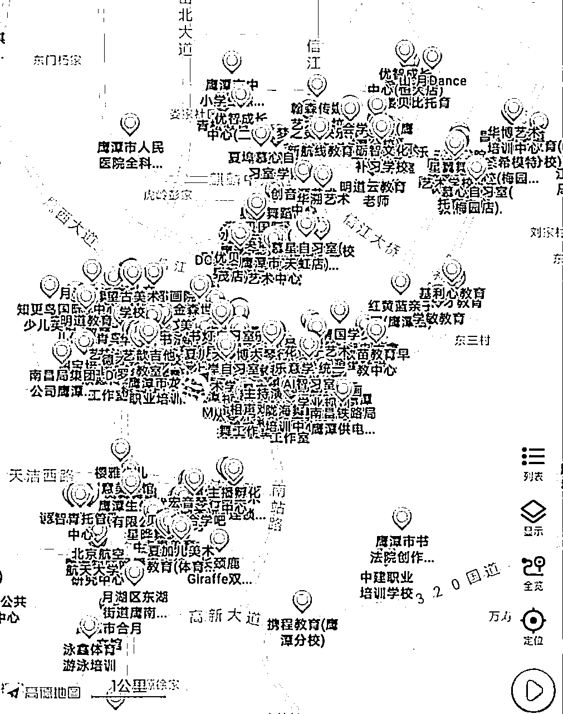
「同城发售」非常相似
航海通过的消息是昨晚收到的，工作是今天早上离职的，从广东出发的高铁是定的明早的票，咱们想好就出发！
这就是我加入这期航海的节奏，拉满自己的执行力
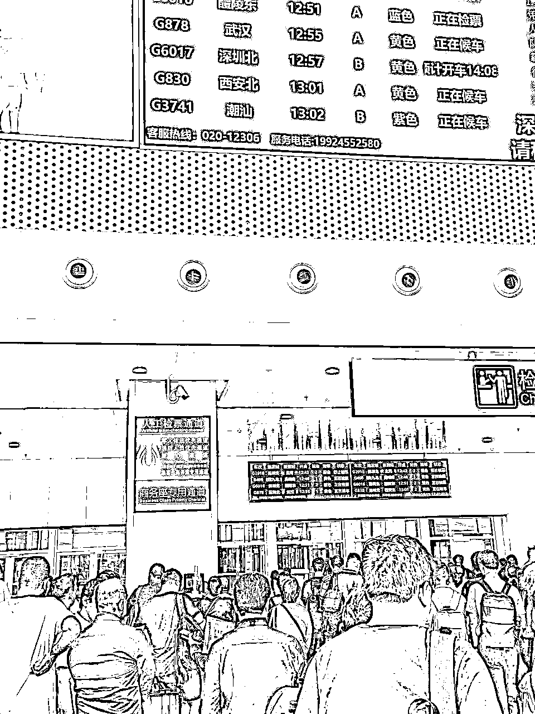
每个城市都会有团队长和助教老师，所以不用担心自己没有经验，前期也会有大课补足相关知识，
来到一个城市咱们先搞定两大件：租酒店和租小电驴
一般来说团队长会考虑大家的成本，也会征求大家的意见
搞定基础硬件，就可以开展工作了，【商务】目前日常的工作个人总结为：约见陌拜、面谈、成交、复盘
我们主要服务的行业是教培艺培行业，但绝大多数的机构周一公休、周二至周五下午2点甚至有的晚上才开门上课，所以我们首先就要下市场，按照地图上的机构位置找到它，没开门咱们就电话联系约见面，如果开门营业的咱们就找相关负责人坐下来聊咱们的方案，听起来不难，但保持高约见率且精准约见负责人也需要一定的方法。（下一part咱们深入分享）
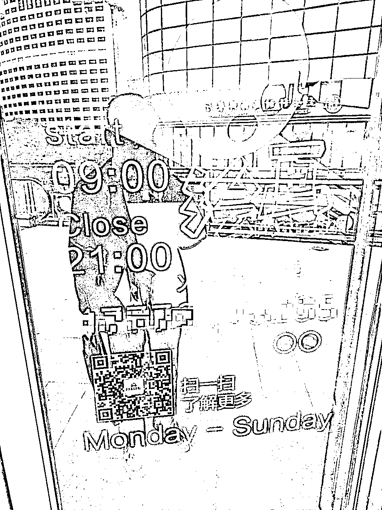
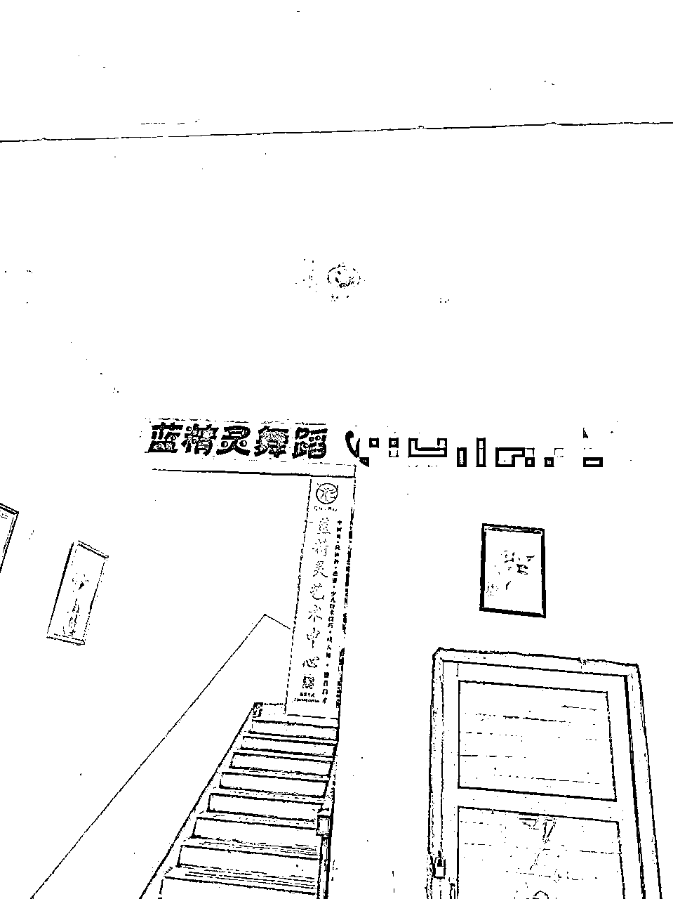
其实一个客户只要被咱们约到了，就已经成功了50%，因为需求在且他有兴趣，成交的几大要素已经具备了两点，接下来就看我们能否把我们的产品专业的展示给客户，并且挖掘到客户的痛点问题并提供解决方案，若都能达成，这客户即便当下没立即成交，你也能在你的表格里把这个客户标个“重点跟进”的颜色。
谈客环节前期没谈过不慌，有助教老师还有团队长，他们是送你们出新手村的领航员，只要你跟着他们去见客户，记得提前打开录音，完整记录下来等回去之后消化成自己的。
好的录音不只是老师讲得好的，客户提出一系列刁钻问题并且带教老师还逐一给解开了的，那才叫好，多听几遍进步飞快。同时可以把录音放到【通义听悟】通过AI提取出框架，框架思维能够让大家大幅度提升自己的谈单能力。
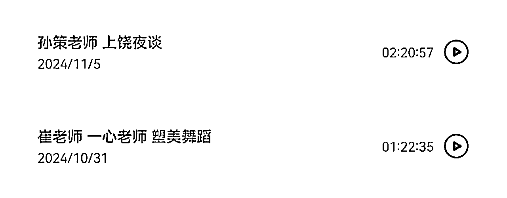
如果成交了，那恭喜你！你问后面怎么办？别担心，有专业交付老师完成后端方案交付，但咱们前端每一个细节都要把控到位。
整体来说，参加同城发售项目可以提升自己多方面的能力：
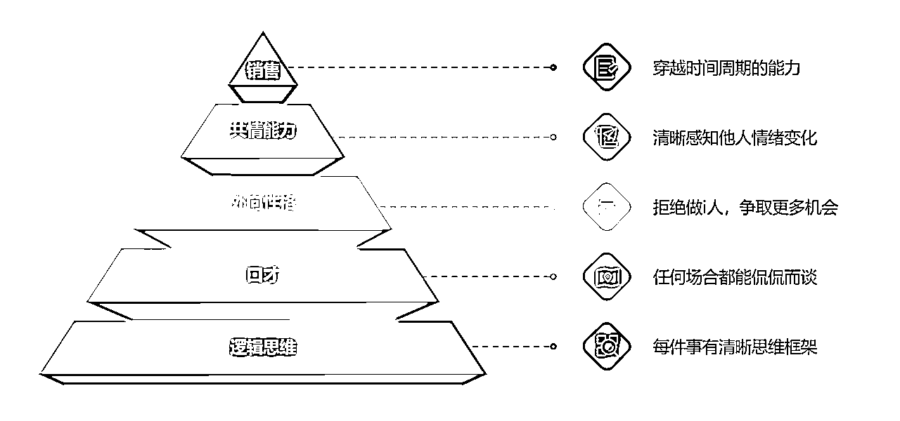
随着项目业务的迭代升级以及获客渠道的增加，今年开年我就从广东来到了山东泰安公司，接触到了全新的工作模式【销转】
公司会通过抖音巨量留资获取客户线索，而我们需要快速联系，并通过一通电话的沟通快速和对方捋清楚产品方案，并在平均1-2通电话之间成交对方。
听起来好像比线下见面商谈少了一些步骤，但实际上更加需要我们具备清晰的逻辑能力和梳理框架的能力，不论客户在电话里面和我们说什么，都逃不出我们的谈单思路框架，从而有效地切中客户提出问题背后隐藏的痛点。
“种一棵树最好的时间是10年前，其次是现在！”
在我参加同城发售之前，我为了更好地了解线下市场，最近距离地了解到需求，我从事了一份本地流量服务商的工作，主要通过探店短视频去帮商家做曝光引流，期间接触过美业、瑜伽、口腔、眼科、餐饮等等行业的客户，会发现其实线下各行各业其实有着非常多的老板是急于通过新媒体线上进行曝光引流带来客户的，因为本身他们只熟悉自己的领域，但因为我原来公司的模式属于只曝光，保不了转化，但单视频收费都在五位数以上，我自感良心过不去，但当我了解到孙策老师的同城发售的业务模式以及未来会服务百业后，我知道这个才是众多实体商家所需要的。
而且业务是否还能做取决于市场需求。
就目前而言，同城发售项目正处在巨轮刚驶出港口不久，我们在做的目前还只是针对教培行业的线下实体业务，结合目前不同省份出单情况、客户反馈情况、竞争对手情况，只要教培行业还在，同城招生保守预估下还能再做 3 年。
但目前孙策老师早已在开展其他行业，例如瑜伽形体、托育水育、口腔等等，所以未来同城发售所触及到的行业非常多。
同时团队内部也在迭代优化，针对商务端、交付端的助力也越来越多，出单的效率以及收益也会大大提高。
同城发售针对教培行业招生的业务其实已经存在非常长的时间，但是模式一直在迭代升级，我们的航海团队在业内是属于实力派阵营，教培艺培行业一直都在，招生的需求就会在，这就是我们的机会。包括未来我们还会开展百业，未来不仅仅是教培，美业、瑜伽等行业都是我们的客户。而且通过项目我们练就的技能是会伴随我们一生，让我们各方面受益的。
深耕同城发售项目，可以成为商务、交付、团队长以及未来的区域合伙人，选择是很多的。
在【商务】阶段
我一共经历了2个省份，江西和湖北。
因为个人原因，上饶我晚了一周才到，所以其实是晚了一拍的，在上饶一共是成交5单
随后我们转战湖北宜昌和荆门，在每一个城市都开出了两位数数量的订单
拿我在江西的12个订单举例，
江西市场和浙江个人感觉差别蛮大的hhh，这其中基本是几十人到一两百号人的校区，课包的设计也分为199课包和299课包，收益方面为了计算方便，统一为每个机构卖出30个199的课包，每个课包赚100元，12x30x100=36000（元），在只做商务的条件下考虑，能得到36000x30%=10800（元），如果有合作开单就按对应比例分配，当然这只是第一个月的新人期收入。
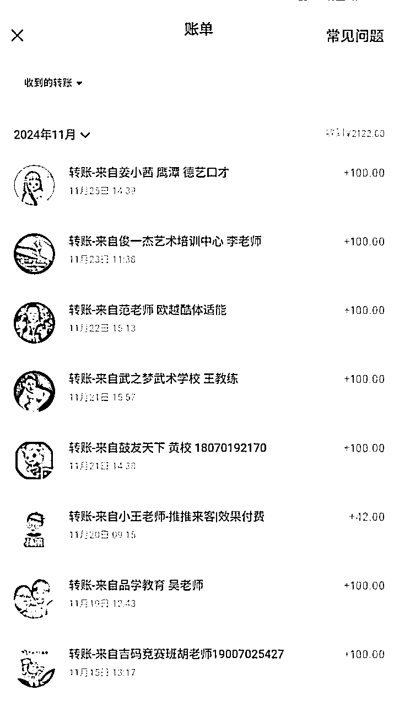
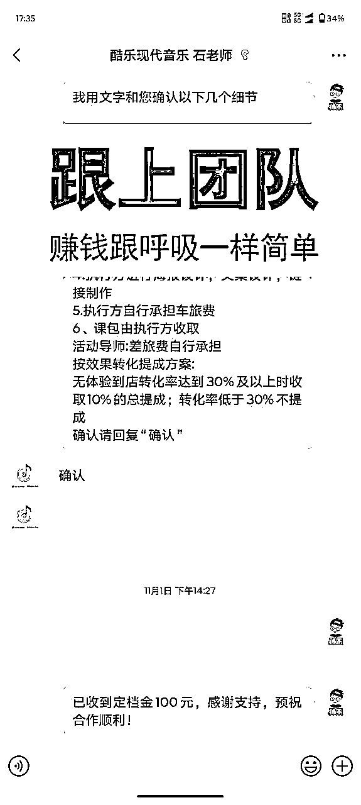
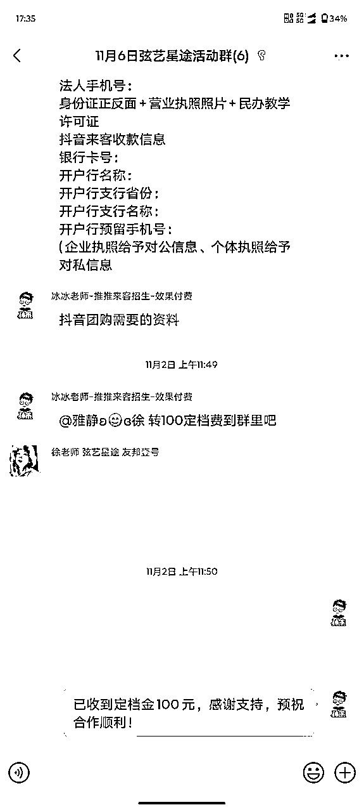
而在【销转】模式下
从今年2月9号抵达公司后，就进入了每天联系不同机构的环节，
10天的时间成交了25个订单，平均每天的成交量在2-3家机构，这些机构近2万的收益
而且销售能力是一项可以不断强化的技能，尤其是你在一个行业内通过和客户沟通的数量的堆叠，
我们对客户提出的每一个问题实际上都会快速反映出应对话术，成单率也会不断提升。
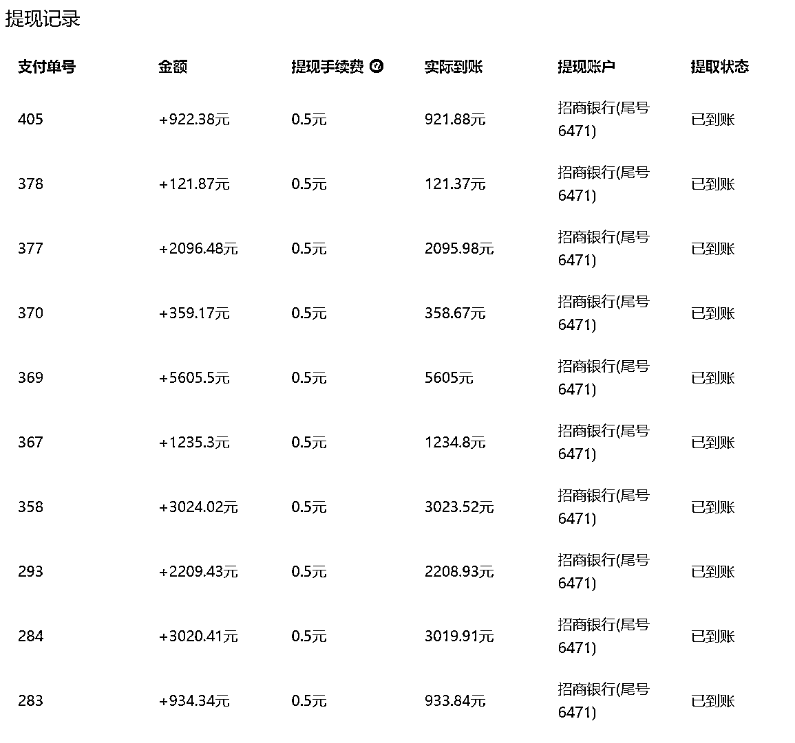
心理上的蜕变：我原本base的城市是广东东莞，家在广州，毕业之后一直是在企业工作，受环境和自身认知的影响，放弃稳定不错的收入去参与一个项目其实是有点挑战性的，但因为生财的影响，包括骨子里温州人的性子，再加上这次女朋友的全力支持，所以我迈出这一步，当真的做了决定之后，就会发现人仿佛站在一个滚动向前的履带上，就必须得动起来，况且是一个自己热爱且极具前景的好项目。
还记得自己刚到上饶第三天，第一次一个人出去陌拜客户，第一家客户是一家叫做童创未来的机构，蹑手蹑脚推开人家的门，按理来说进门一楼没人在就该大声打声招呼，我硬是走到二楼见到正在装窗帘的校长才打上一声招呼，回想起来还好没被当成贼撵出来。
第一次和校长聊方案，开场白、动作、生硬地掏出A4纸打印的模式方案，说起话来磕磕绊绊，想表达的产品价值硬的像是被江西的温度冻住了，半天吐不出一个关键点。
而今天的我，一举一动到谈话气场、节奏把握、方案确定、问题处理都有了极大幅度提升，所以谁都有第一次，无需惧怕，用实战次数战胜恐惧是最有效的。
技能上的进步：在「同城发售」项目里面我们只要大胆地去沟通，我们的交流能力还有我们的气场、表情控制能力、观察力都能够大幅度提升，因为我们在和客户沟通的时候，需要思维逻辑框架时刻保持清晰，并且每一句话都讲的清晰稳重，同时还要观察每句话后客户的反应和面部表情的变化，以推断客户意向度的变化。
友情的收获：在航海期间我认识到了非常多优秀的圈友，例如我在上饶期间合作出单的搭档「冰冰老师」，我的带教老师「大林老师」，认真负责交付的「芦老师」，还有一直喊着口号”干就完了！“的车车老师以及小王老师，战队里还有非常多优秀的圈友老师，每一位都是隐藏大佬，闪烁着不同的光芒，都值得我去学习！
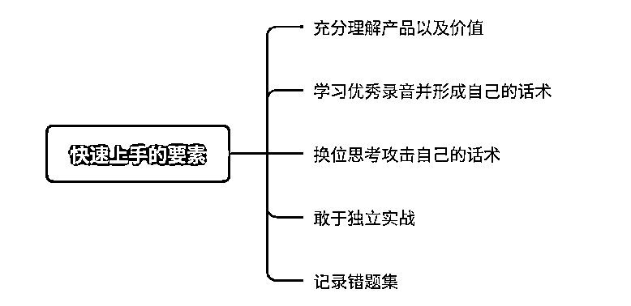
销售的话术永远不是靠死记硬背的，而是需要充分理解我们所推的产品是服务什么客户，用什么价值解决客户的什么问题。我们来到航海，会有整体的介绍以及业务模式图，刚来第一天我主要就是梳理清晰我们的产品结构、方案内容以及价值，理解了这些才能算打好理解话术的基础，不然背话术就好比“无字天书”。
话术也不是一成不变的，而是不断吸收实战中带来的反馈并持续迭代升级的。我们可以换位我们的客户，设想客户会提出哪些问题，也可以和助教老师模拟实战，当然最快进步的方法就是在实战中检验，如果你认为你已经掌握了整体的产品结构和方案，一定要敢于独立谈单，前期可以带着助教老师辅助，帮你查漏补缺，你兜不住了还有人帮你圆回来哈哈哈。
每一场谈单，都是对自己的一次验收，有问题要感到开心，这都是进步的机会，记下来并第一时间吸收优化自己的话术，下一次就不会再犯，渐渐地咱们就变得“专业”起来了。
其实做业务也是概率游戏
销冠为什么是销冠，因为他见得客户数量比谁都多，大盘数据已经托底了，再加上业务能力的专业以及不断精进，遇到的客户问题解决得多了，经验丰富，他的转化率就高
所以不是销冠多牛逼，而是每一个人都能成为销冠，时间投入问题
因此我们参加「同城发售」航海，如果想拿到一个好成绩，执行力一定要拉满
我们都是早上8:30开会，会后梳理今日路线，基本上返程都已是晚上八九点
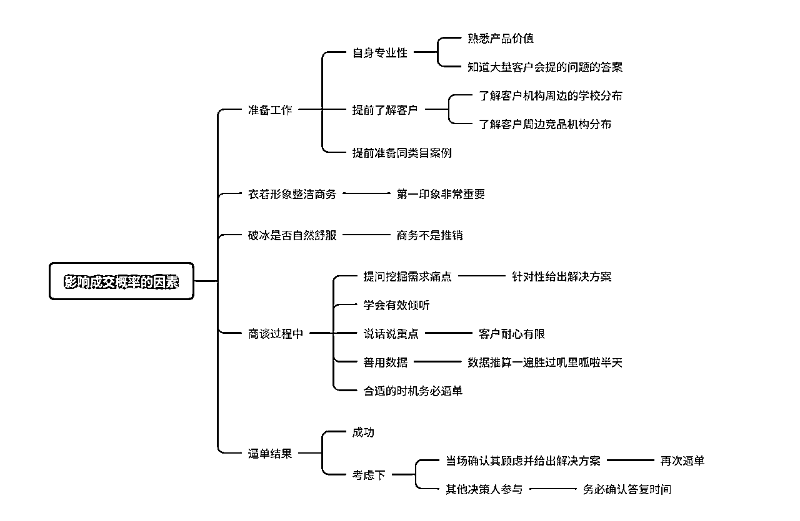
成功见到每一个机构的关键负责人都是来之不易的机会，所以我们需要充分地做好准备
在有限的商谈时间内，有效地把我们的价值100%打到对方心坎上
包括很多人会面临，客户提出说考虑一下，然后自己就回答好的，那您先考虑下，等您答复。
如果是上面这样就完蛋了，正常咱们应该和气地问他顾虑的点在哪里，哪怕今天咱们不签单，为了后续咱们顺利合作，我们也想帮您把顾虑问题解决好。
成交之前其实就是解决客户内心顾虑问题的过程。
我记得一句话：
人不要总想着被他人点亮，我们要做点亮他人的人
「同城发售」因为是线下航海，过程中可能会有各种各样的小插曲，像这次航海中，同样来自广东的车车老师，他的标志性口号就是：干就完了！
这句口号相信每一位生财圈友都再熟悉不过了，但是我们是否能在项目真的实打实地去做去执行的时候还是否能够一直保持自己的积极心态，不论面对什么情况，依旧保持那股冲劲呢？
答案是：可以的！
车车老师一直说我能量满满，一股子牛劲，实际上这需要几大要素构成：
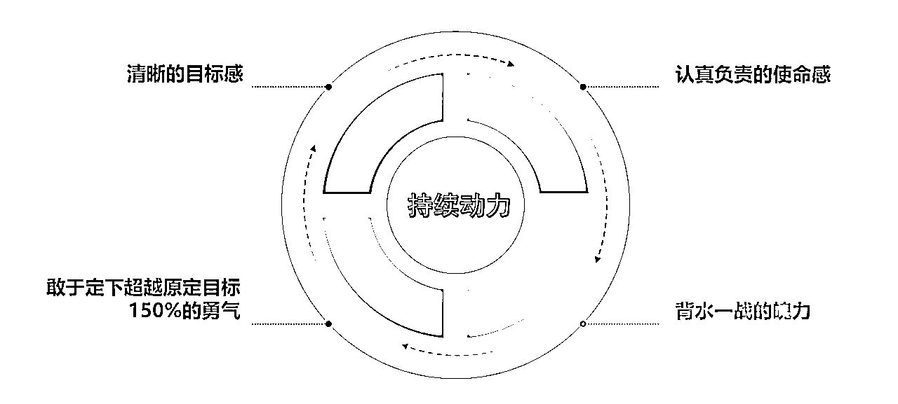
相信很多圈友都看过木易大佬的那篇著名的帖子，《绑着炸弹做淘宝，负债百万的逆袭之路》，每个人身体里蕴含的潜能自己是不知道的，大脑会欺骗自己，因为人有惰性。
所以不要去想 ”如果做不成怎么办？”
而应该去想“我会完成一个月20单的目标”
这样你会具备目标感，你选择了一个项目你就会有对自己负责的使命感，并且你带着勇气定下的目标，你每天会想着如何去完成这20单的月目标，哪怕最终没达到，结果也一定比当初自己犹犹豫豫的时候要来的强！
除了精神鼓励之外，我的独立谈单能力以及成交概率之所以一个月内极速提升，也是因为帮助队友一起谈了蛮多单子，并且帮助队友一起复盘问题，自己也能够得到提升！
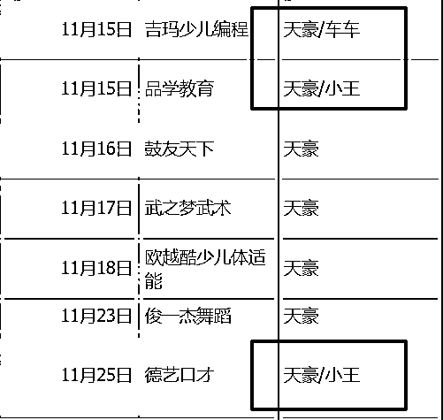
目前团队可选择的职位定位有前端商务、后端交付、销转、再往上就是团队长以及区域合伙人。
而这次我参与到了商务销售和销转的环节中，前端商务再往上是可以构建自己的团队去开发市场的，没有人可以完完全全把各方面能力都兼顾上，所以我需要把自己的商务谈单能力拉满，同时帮助更多希望在同城发售商务板块做好的小伙伴，另外现在在销转方面沉淀出自己的方法论和工作sop，才能对一个完整方案的制定有更加全面的认知。
深耕同城发售项目，从前端商务到区域合伙人就是我接下来要走的打怪升级之路。
这个项目欢迎每个对自己有信心、有自驱力、目标感的小伙伴，如果你也认同同城发售项目，这个项目就会为你敞开大门，说不定我们还会一起在一个团队并肩作战！
现在航海类目非常多，哪怕不是同城发售，面对众多项目，你没想清楚的话真的很容易挑花眼~
先说说我自己踩过的坑：
我参加过视频号口播带货航海、web3航海、同城发售航海、在生财以外我自己还付费参加过小红书IP训练营，这些都是非常好的不同时期的热门项目，项目本没有错，错在我的初心一直在企图参加一个又一个的风口项目，总有一个成了就赚大发了，事实证明这种想法是不对的，我不过是知道有宝藏就挖了一个个深度不够的坑罢了，最终大部分项目都是浅尝即止，没有持续去做去放大，这样既耗费了自己大量时间心力，又拿不到真正的大结果。
所以我们一定要摆正自己的观念，航海不是让我们一夜暴富的，但敢于下场把手弄脏，一定能拿到结果！
航海提供一个个优质的目前正在市场风口或者具备成为市场风口项目潜力的项目，再由专业的教练团队带着大家从项目小白到跑通0-1。这已经非常牛了，但如果我们想要从1-10-100拿到大结果，需要的是我们自己选择好项目并且持续做下去，就和挖宝藏一样，每个不同的地方都挖一个浅浅的洞，再怎么样数量多了深度也不够，但如果你知道这个项目深耕下去能取得好结果，那我们就应该坚定信念，持续下去！
当然还有一种情况是自己给自己的内心设置了太多的“过滤机制”，导致没有一个项目你能够看得上，觉得没有一个项目适合自己，如果你是后面这种情况，推荐一篇刘小排老师的经典好文章给你《为什么你进了「生财有术」，还是赚不到钱?》或能解开你的心结~
感谢生财有术，感谢孙策老师，提供这么好的平台，让我能够在线下同城航海中找到自己的方向。
因为我是第一次在生财发帖，这里由衷感谢@梁靠谱 老师、@大林老师的文章指导！靠谱老师人美心善！大林老师人帅业务能力杠杠滴！
希望所有的圈友都能够多多赚钱，2025年都发大财！！